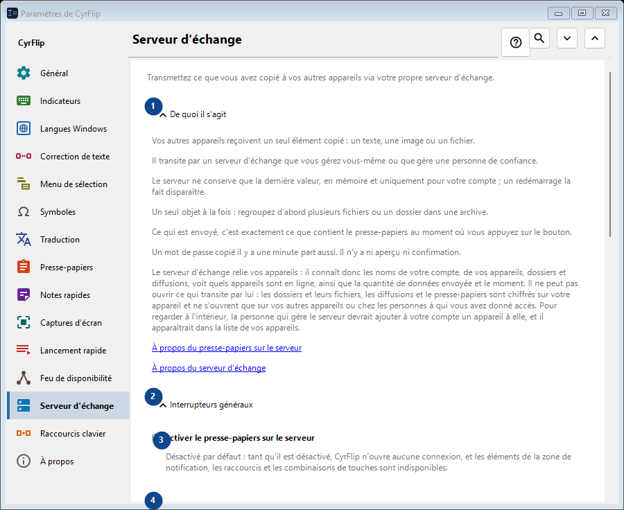
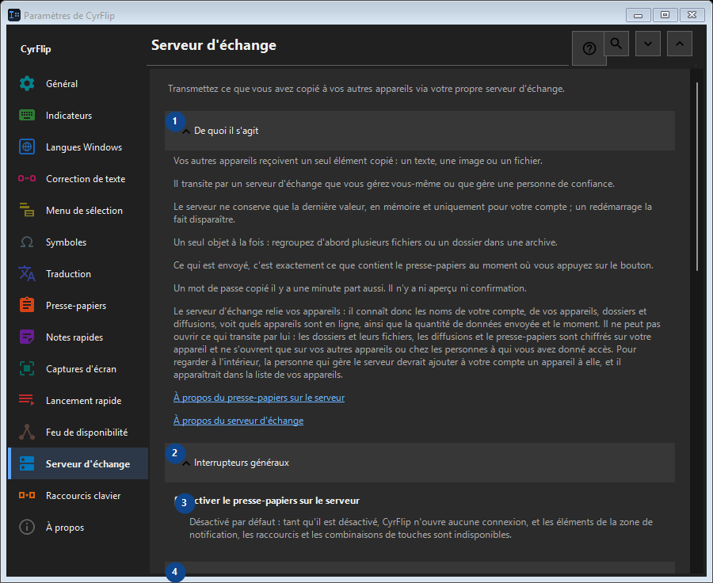

Serveur d'échange
À quoi cela sert
Transmettez ce que vous avez copié à vos autres appareils via votre propre serveur d'échange.


Ordre des actions
Les réglages s’appliquent immédiatement. Aucun ordre n’est imposé ; utilisez les groupes ci-dessous.
Éléments
1. De quoi il s'agit
Utilisez cette commande pour l’action indiquée. Lisez toute confirmation avant de l’accepter.
Vos raccourcis2. Interrupteurs généraux
Utilisez cette commande pour l’action indiquée. Lisez toute confirmation avant de l’accepter.
Vos raccourcis3. Activer le presse-papiers sur le serveur
Désactivé par défaut : tant qu'il est désactivé, CyrFlip n'ouvre aucune connexion, et les éléments de la zone de notification, les raccourcis et les combinaisons de touches sont indisponibles.
Vos raccourcis4. Comptes
Utilisez cette commande pour l’action indiquée. Lisez toute confirmation avant de l’accepter.
Vos raccourcis5. Ajouter un compte..
Indisponible tant que «Activer le presse-papiers sur le serveur» est désactivé : activez d'abord cet interrupteur. Cet élément est indisponible. Activez d’abord sa fonction ou sélectionnez une entrée.
Vos raccourcis6. Raccourcis clavier et raccourcis du bureau
Utilisez cette commande pour l’action indiquée. Lisez toute confirmation avant de l’accepter.
Vos raccourcis7. Envoyer le presse-papiers au serveur
Indisponible tant que «Activer le presse-papiers sur le serveur» est désactivé : activez d'abord cet interrupteur. Cet élément est indisponible. Activez d’abord sa fonction ou sélectionnez une entrée.
Vos raccourcis8. Modifier - Envoyer le presse-papiers au serveur
Indisponible tant que «Activer le presse-papiers sur le serveur» est désactivé : activez d'abord cet interrupteur. Cet élément est indisponible. Activez d’abord sa fonction ou sélectionnez une entrée.
Vos raccourcis9. Récupérer le presse-papiers depuis le serveur
Indisponible tant que «Activer le presse-papiers sur le serveur» est désactivé : activez d'abord cet interrupteur. Cet élément est indisponible. Activez d’abord sa fonction ou sélectionnez une entrée.
Vos raccourcis10. Modifier - Récupérer le presse-papiers depuis le serveur
Indisponible tant que «Activer le presse-papiers sur le serveur» est désactivé : activez d'abord cet interrupteur. Cet élément est indisponible. Activez d’abord sa fonction ou sélectionnez une entrée.
Vos raccourcis11. Placer « Envoyer » sur le bureau
Indisponible tant que «Activer le presse-papiers sur le serveur» est désactivé : activez d'abord cet interrupteur. Cet élément est indisponible. Activez d’abord sa fonction ou sélectionnez une entrée.
Vos raccourcis12. Placer « Récupérer » sur le bureau
Indisponible tant que «Activer le presse-papiers sur le serveur» est désactivé : activez d'abord cet interrupteur. Cet élément est indisponible. Activez d’abord sa fonction ou sélectionnez une entrée.
Vos raccourcis13. Fichiers reçus
Utilisez cette commande pour l’action indiquée. Lisez toute confirmation avant de l’accepter.
Vos raccourcis14. Dossier des fichiers reçus du serveur
Indisponible tant que «Activer le presse-papiers sur le serveur» est désactivé : activez d'abord cet interrupteur. Cet élément est indisponible. Activez d’abord sa fonction ou sélectionnez une entrée.
Vos raccourcis15. Choisir - Dossier des fichiers reçus du serveur
Indisponible tant que «Activer le presse-papiers sur le serveur» est désactivé : activez d'abord cet interrupteur. Cet élément est indisponible. Activez d’abord sa fonction ou sélectionnez une entrée.
Vos raccourcis16. Ouvrir le dossier - Dossier des fichiers reçus du serveur
Indisponible tant que «Activer le presse-papiers sur le serveur» est désactivé : activez d'abord cet interrupteur. Cet élément est indisponible. Activez d’abord sa fonction ou sélectionnez une entrée.
Vos raccourcis